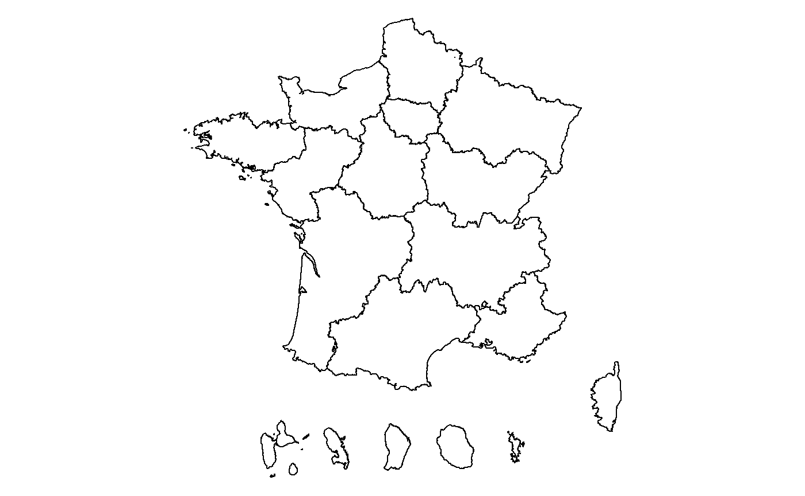
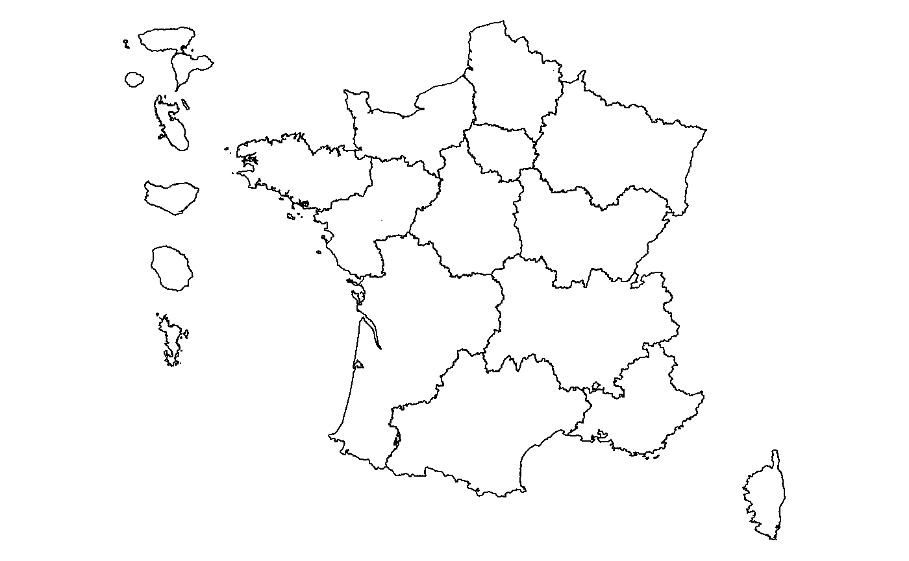

Apprendre les principales fonctionnalités de CARTElette
antuki
Source:vignettes/CARTElette.Rmd
CARTElette.RmdIntroduction à CARTElette
Nous allons balayer dans cette vignette les principales fonctionnalités du package CARTElette.
Le découpage des territoires français, en particulier les communes, n’est pas un phénomène immuable. Chaque année certaines communes changent de codes, ou bien de nom, fusionnent ou encore se divisent. Certains périmètres supra-communaux changent également, comme celui des cantons qui a été récemment redéfini. C’est à l’Insee que revient le suivi de ces changements afin d’établir chaque année le code officiel géographique (COG).
Ce répertoire vient en complément du package R antuki/COGugaison qui a pour objectif de manipuler des données communales produites à différents millésimes et de les agréger à différents niveaux supra-communaux.
Il s’agit désormais de créer des couches cartographiques (communales et supra-communales) qui correspondent à la situation du découpage des territoires français (communes et niveaux supra-communaux, France et Outre-mer) au 01 janvier de chaque année (date de référence du code officiel géographique).
Il est également très important de souligner que les couches cartographiques constituées ici sont réalisées à partir des couches publiées par l’IGN et sont modifiées par un programme R (déplacement des DOM afin de constituer des couches à visée statistique).
- COG2017 et postérieurs : ADMIN-EXPRESS
- COG antérieurs : GEOFLA
Un package R est aussi adossé à ce repository. Il permet de charger la couche cartographique adaptée à vos données en indiquant l’année du code officiel géographique (COG) ainsi que le niveau géographique (communal ou supra-communal) souhaités ainsi que de déplacer les départements d’outre-mer.
Pour installer le package CARTElette et le charger dans R :
#remotes::install_github("antuki/CARTElette/CARTElette@RPackage")
library(CARTElette)Charger une couche cartographique dans R
Il vous est possible de charger la couche cartographique adaptée au niveau géographique (communal ou supra-communal) souhaité. Ces données sont directement intégrées au package R et ont donc, pour une question de taille de fichier, une topologie simplifiée.
reg_sf_simplifiee <- charger_carte(nivsupra = "REG", geometrie_simplifiee = TRUE)
par(mar = c(0,0,0,0))
plot(sf::st_geometry(reg_sf_simplifiee))
Il vous est possible de charger davantage de données. En particulier, il vous est possible de préciser l’année du code officiel géographique (COG). Ces données possèdent une topologie précise mais doivent par conséquent être téléchargées, par défaut dans un dossier temporaire, ce qui nécessite une connexion internet.
Les millésimes posibles sont de 2015 à l’année en cours.
Les niveaux géographiques possibles sont :
- “DEP” : départements
- “REG” : régions
- “EPCI” : EPCI au 01/01/20XX
- “ARR” : arrondissements au 01/01/20XX
- “CV” : cantons-villes au 01/01/20XX
- “ZE2010” : zones d’emploi 2010 (avant 2020)
- “ZE2020” : zones d’emploi 2020 (après 2020)
- “UU2010” : unités urbaines 2010 (avant 2020)
- “UU2020” : unités urbaines 2020 (après 2020)
- “AU2010” : aires urbaines 2010 (avant 2020)
- “AAV2020” : aires d’attraction des villes 2020 (après 2020)
- “BV2012” : bassins de vie 2012
Pour les COG plus anciens, regarder au cas par cas selon les années. Par exemple, str(table_supracom_2008)
La fonction renvoie une couche cartographique de type “sf” après avoir téléchargé le fichier sur votre disque (pas défaut dans un répertoire temporaire).
reg_sf <- charger_carte(COG = 2021, nivsupra = "REG", geometrie_simplifiee = FALSE)## Reading layer `REG_2021_CARTElette' from data source `C:\Users\Kim Antunez\AppData\Local\Temp\Rtmp6DAgDI\REG_2021_CARTElette.shp' using driver `ESRI Shapefile'
## Simple feature collection with 18 features and 2 fields
## Geometry type: MULTIPOLYGON
## Dimension: XY
## Bounding box: xmin: -5.141241 ymin: 40.26843 xmax: 9.560094 ymax: 51.08899
## Geodetic CRS: WGS 84
par(mar = c(0,0,0,0))
plot(sf::st_geometry(reg_sf))
Il est possible de charger ou non les arrondissements municipaux grâce à l’option enlever_PLM.
com_sf_sansPLM <- charger_carte(COG = 2021, nivsupra = "COM", enlever_PLM = TRUE)
com_sf_avecPLM <- charger_carte(COG = 2021, nivsupra = "COM", enlever_PLM = FALSE)
par(mar = c(0,0,0,0))
library(sf)
library(dplyr)Avec les arrondissements :
plot(st_geometry(com_sf_avecPLM %>% filter(substr(INSEE_COM,1,2)%in%c("75")) ))
Sans les arrondissements :
plot(st_geometry(com_sf_sansPLM %>% filter(substr(INSEE_COM,1,2)%in%c("75")) ))
Repositionner les DOM grâce à une grille
Il vous est possible de modifier la position souhaitée des DOM à partir d’une grille géographique. Indiquez dans projection la projection du fond de carte que vous souhaitez modifier. Elle s’obtient grâce à st_crs(couche_sf)$proj4string.
positions <- positionner_DOM_grille(projection = st_crs(reg_sf)$proj4string)
Cette technique a l’avantage d’aligner les DOM de manière exacte contrairement à la technique du “glissage” ci-dessous qui rend le positionnement plus approximatif.
Repositionner les DOM en les glissant
Il vous est possible de modifier la position souhaitée des DOM en les glissant à partir d’une interface graphique.
ze <- charger_carte(COG = 2021, nivsupra = "ZE2020")
positions <- positionner_DOM_glisser(objet = ze)
positions$`1`
[1] -5.074931 46.920490
$`2`
[1] -6.768008 49.571175
$`3`
[1] -2.65836 45.08238
$`4`
[1] -6.195586 45.084970
$`5`
[1] 4.948049 41.193759

Cette technique a l’avantage de fournir un aperçu en direct du nouveau positionnement des DOM contrairement à la technique de la “grille” ci-dessus qui ne le permet pas.
Déplacer les DOM
Une fois les positions des DOM choisies grâce aux fonctions précédentes ou en indiquant vous-mêmes une liste de coordonnées, vous pouvez modifier une couche cartographique de type sf en indiquant ces positions.
Exemple 1 : En choisissant précisément la position des DOM
ze <- charger_carte(COG = 2021, nivsupra = "ZE2020")## Reading layer `ZE2020_2021_CARTElette' from data source `C:\Users\Kim Antunez\AppData\Local\Temp\Rtmp6DAgDI\ZE2020_2021_CARTElette.shp' using driver `ESRI Shapefile'
## Simple feature collection with 306 features and 2 fields
## Geometry type: MULTIPOLYGON
## Dimension: XY
## Bounding box: xmin: -5.141241 ymin: 40.26843 xmax: 9.560094 ymax: 51.08899
## Geodetic CRS: WGS 84
#positions <- positionner_DOM_glisser(objet=ze)
#positions <- positionner_DOM_grille(projection = st_crs(ze)$proj4string)
positions <- list(c(-5.074931, 46.920490), c(-6.768008, 49.571175), c(-2.65836, 45.08238),
c( -6.195586, 45.084970), c(4.948049, 41.193759))
ze_final <- deplacer_DOM(objet = ze, positions = positions)## although coordinates are longitude/latitude, st_union assumes that they are planar
## although coordinates are longitude/latitude, st_union assumes that they are planar
## although coordinates are longitude/latitude, st_union assumes that they are planar
## although coordinates are longitude/latitude, st_union assumes that they are planar
## although coordinates are longitude/latitude, st_union assumes that they are planar
par(mar=c(0,0,0,0))
plot(sf::st_geometry(ze_final))Exemple 2 : En choissant la position des DOM à partir de paramètres par défaut proposés par le package
ze_final_2 <- deplacer_DOM(objet = ze, positions_type = "topleft")## although coordinates are longitude/latitude, st_union assumes that they are planar
## although coordinates are longitude/latitude, st_union assumes that they are planar
## although coordinates are longitude/latitude, st_union assumes that they are planar
## although coordinates are longitude/latitude, st_union assumes that they are planar
## although coordinates are longitude/latitude, st_union assumes that they are planar
par(mar = c(0,0,0,0))
plot(sf::st_geometry(ze_final_2))
Exemple 3 : En changeant les zooms des DOM et même en pouvant s’amuser à les faire pivoter !
ze_final_3 <- deplacer_DOM(objet = ze, positions_type = "topleft",
rotations = c(90,180,90,-90,0), zooms = c(1,1,2,0.5,1))## although coordinates are longitude/latitude, st_union assumes that they are planar
## although coordinates are longitude/latitude, st_union assumes that they are planar
## although coordinates are longitude/latitude, st_union assumes that they are planar
## although coordinates are longitude/latitude, st_union assumes that they are planar
## although coordinates are longitude/latitude, st_union assumes that they are planar
par(mar = c(0,0,0,0))
plot(sf::st_geometry(ze_final_3))Bonne découverte…!